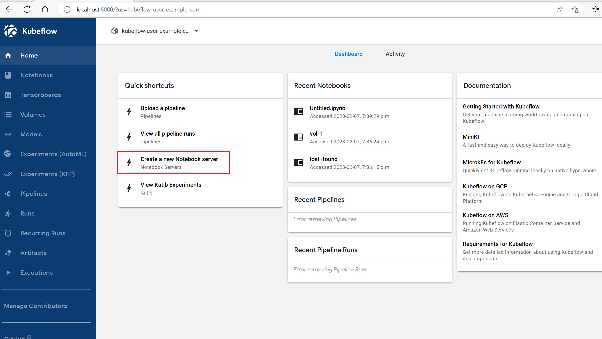

Deploy Kubeflow with Password, Ingress and TLS
Categories:
This deployment option is outdated. Please use the vanilla deployment option instead
We are working on updating this option but for now, please use the Vanilla deployment option.
Background
In this lab you will deploy an Azure Kubernetes Service (AKS) cluster and other Azure services (Container Registry, Managed Identity, Key Vault) with Azure CLI and Bicep. You will then install Kubeflow after creating custom Password. This deployment option will also make use of TLS with a self-signed certificate and an ingress controller. Swap out this self signed certificate with your own CA certs for production workloads.
Deploy Kubeflow with Password, Ingress and TLS
User Access Admin and Contributor or Owner access to the subscription you are deploying into.
Use the Azure CLI and Bicep templates to deploy the infrastructure for your application. We will be using the AKS construction project to rapidly deploy the required Azure resources. The project allows users the flexibility to tweak their AKS environment however they want. Please check out the AKS construction helper for more details about AKS construction.
You can also try out the automated option using Mage build tool at the Azure Open Source Labs.
Login to the Azure CLI.
az login
az account set --subscription <NAME_OR_ID_OF_SUBSCRIPTION>.
Install kubectl using the Azure CLI, if required.
az aks install-cli
Clone this repo which includes the Azure/AKS-Construction and kubeflow/manifests repos as Git Submodules
git clone --recurse-submodules https://github.com/Azure/kubeflow-aks.git
Change directory into the newly cloned directory
cd kubeflow-aks
Deployment steps
Get the signed in user id so that you can get admin access to the cluster you create
SIGNEDINUSER=$(az ad signed-in-user show --query id --out tsv)
RGNAME=kubeflow
Create deployment
az group create -n $RGNAME -l eastus
DEP=$(az deployment group create -g $RGNAME --parameters signedinuser=$SIGNEDINUSER -f main.bicep -o json)
echo $DEP > test.json and restore it by running export DEP=$(cat test.json).
KVNAME=$(echo $DEP | jq -r '.properties.outputs.kvAppName.value')
AKSCLUSTER=$(echo $DEP | jq -r '.properties.outputs.aksClusterName.value')
TENANTID=$(az account show --query tenantId -o tsv)
ACRNAME=$(az acr list -g $RGNAME --query "[0].name" -o tsv)
Install kubelogin and log into the cluster
Next install kubelogin using the installation instructions appropriate for your computer. From there, you’ll need to run the following commands to download the kubeconfig file and convert it for use with kubelogin.
az aks get-credentials --resource-group $RGNAME \
--name $AKSCLUSTER
kubelogin convert-kubeconfig -l azurecli
Log in to the cluster. Enter your Azure credentials when prompted afterwards to complete the login. If this is successful, kubectl should return a list of nodes.
kubectl get nodes
Install kustomize
Next install kustomize using the installation instructions appropriate for your computer.
kustomize command below to deploy Kubeflow, you must use Kustomize v3.2.0. More info here.
Install Kubeflow with TLS and Unique Password
Please note that a self-signed certificate is used for demonstration purposes. Do not use self signed certs for production workloads. You can easily swap this self-signed cert with your CA certificate for your usecase.
-
The first step is to generate a new Hash/Password combination using bycrypt. There are many ways of doing this, eg by generating it using python. For simplicity we will be using coderstool’s Bycrypt Hash Generator for testing purposes. Do not do this for production workloads. In the plain text field, enter a password for your first user, then click on the “Generate Hash” button. You can generate multiple if you have multiple users.
-
Head to the deployments/tls/dex-config-map.yaml file and update the hash value there (around line 22) with the hash you just generated. You can also change the email address, username and userid. In addition, you can setup multiple users by adding more users to the array. Please update the default email address in the params file located at manifests\common\user-namespace\base\params.env file if changed from default.
-
Update your auth.md file with the new email address and password (plain text password not hash) or store the secrets in a more secure way
-
From the root of the repo,
cdinto kubeflow’smanifestsdirectory and make sure you are in thev1.8-branch.cd manifests/ git checkout v1.8-branch cd .. -
Copy the contents of this newly updated manifests folder to the kubeflow manifests folder. This will update the files so the deployment includes your config changes.
cp -a deployments/tls manifests/tls -
cd to the manifests folder and install kubeflow
cd manifestsInstall all of the components via a single command
while ! kustomize build tls | kubectl apply -f -; do echo "Retrying to apply resources"; sleep 10; done -
Once the command has completed, check the pods are ready
kubectl get pods -n cert-manager kubectl get pods -n istio-system kubectl get pods -n auth kubectl get pods -n knative-eventing kubectl get pods -n knative-serving kubectl get pods -n kubeflow kubectl get pods -n kubeflow-user-example-com -
Restart dex to ensure dex is using the updated password
‚ö†Ô∏è Warning: It is important that you restart the dex pod by running the command below. If you don’t any previous password (including the default password 12341234 if not changed) will be used from the time the Service is exposed viaLoadBalanceruntil the time this command is run or the dex is otherwise restarted.kubectl rollout restart deployment dex -n auth -
Configure TLS. Start by getting IP address of istio gateway
kubectl -n istio-system get service istio-ingressgateway --output jsonpath={.status.loadBalancer.ingress[0].ip}Replace the IP address in the tls/certificate.yaml file (line 13) with the IP address of the istio gateway and save the file.
Please note that instead of providing the IP address like we did above, you could give the LoadBalancer an Azure sub-domain (via the patch below in the kustomization.yaml file in tls folder ) and use that too.
- target: version: v1 kind: Service name: istio-ingressgateway patch: |- apiVersion: v1 kind: Service metadata: name: istio-ingressgateway namespace: istio-system annotations: service.beta.kubernetes.io/azure-dns-label-name: <unique-service-label> -
Deploy the certificate manifest file.
kubectl apply -f tls/certificate.yaml -
You have completed the deployment. Access the dashboard by entering the IP address (http://
) in a browser. You might get a warning saying the connection is unsafe. This is expected since you are using a self signed certificate. Click on advanced and proceed to the URL to view your dashboard. Log in using the email address and password in the auth.md file (assuming you updated it with your email address and password in the previous step) 
Testing the deployment with a Notebook server
You can test that the deployments worked by creating a new Notebook server using the GUI.
- Click on “Create a new Notebook server” 
- Click on “+ New Notebook” in the top right corner of the resulting page
- Enter a name for the server
- Leave the “jupyterlab” option selected
- Feel free to pick one of the images available, in this case we choose the default
- Set Requested CPU to 0.5 and requested memory in Gi to 1
- Under Data Volumes click on “+ Add new volume”
- Expand the resulting section
- Set the name to datavol-1. The default name provided would not work because it has characters that are not allowed
- Set the size in Gi to 1
- Uncheck “Use default class”
- Choose a class from the provided options. In this case I will choose “azurefile-premium”
- Choose ReadWriteMany as the Access mode. Your data volume config should look like the picture below

- Click on “Launch” at the bottom of the page. A successful deployment should have a green checkmark under status, after 1-2 minutes.

- Click on “Connect” to access your jupyter lab
- Under Notebook, click on Python 3 to access your jupyter notebook and start coding
Destroy the resources
Run the command below to destroy the resources you just created after you are done testing
az group delete -n $RGNAME